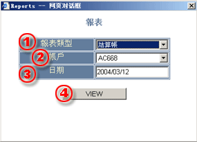
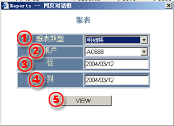

報表
本系統提供兩種報表方式：
用戶可通過主窗口中的菜單訪問報表對話框。
結算帳
結算帳是顯示每天的帳戶活動資金的變化狀態和交易細節的報表，其中主要包含：
用戶可通過主窗口的菜單欄直接打開結算帳窗口，在對話框出現後用戶應選擇和填寫所需的請求信息。
| 1 | 報表類型 - 選擇報表類型。 |

|
| 2 | 帳號 - 選擇要輸出結算帳的交易帳戶。 | |
| 3 | 日期 - 選擇要輸出報表的日期。 | |
| 4 | View - 提交顯示報表請求按鈕。 |
當所有的請求信息都以填寫完畢，按下 VIEW 按鈕可顯示報表窗口。 在報表窗口中用戶就可進行報表打印了。
明細帳戶是提供一定周期內交易帳戶的結餘描述信息，但其中沒有包含浮動盈虧信息。
用戶可通過主窗口的菜單欄直接打開結算帳窗口並可選擇到明細帳窗口，在明細帳話框出現後用戶應選擇和填寫所需的請求信息。
| 1 | 報表類型 - 選擇明細帳。 |

|
| 2 | 帳號 - 選擇要輸出結算帳的交易帳戶。 | |
| 3 | 從 - 選擇要輸出報表的開始日期。 | |
| 4 | 到 - 選擇要輸出報表的結束日期。 | |
| 5 | View - 提交顯示報表請求按鈕。 |
當所有的請求信息都以填寫完畢，按下 VIEW 按鈕可顯示報表窗口。 在報表窗口中用戶就可進行報表打印了。